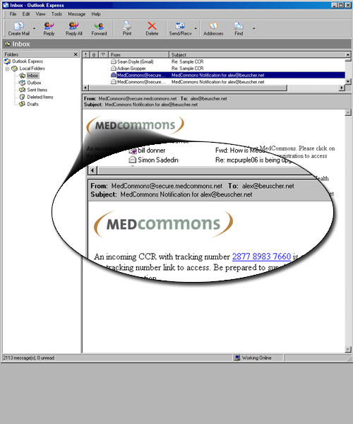
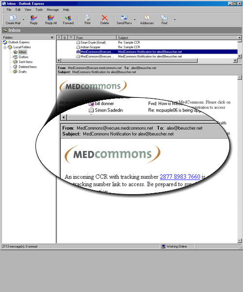

a patient centric ccr transport and storage network

 

2. MedCommons eReferrals Each CCR is identified with a Tracking Number and PIN. To ensure secure transmission, patient privacy, and HIPAA compliance, the PIN used to unlock a Patient's CCR is transmitted via phone or other personal communication separately from the tracking number, which appears as a link in the receiving physician's email inbox.
3. Unlock MedCommons The receiving doctor unlocks the message clicking the link in her email and entering the corresponding PIN.
4. PDF & DICOM Attachments MedCommons allows formatted reports (PDF) and diagnostic imaging to be attached to a patient's CCR.
5. Image Viewing The MedCommons viewer allows manipulation of diagnostic images. Features like magnification and animation are available.
6. Replying to a CCR The receiving physician can reply to the sender with consultation notes, which are automatically added to the current CCR. Formatted narrative reports can also be attached.
7. Result Email is Received The original sending physician receives the record back, and can access the CCR and attachments using the same PIN. Forwarding for a second opinion is just as easy, and the PIN can be changed to create a different lock.
8. Conclusion MedCommons is faster and more convenient than paper whether or not you have an electronic health record. If your EHR uses the CCR standard, MedCommons adds the essential function of secure communications with anyone anywhere, like paper. Additionally, the MedCommons CCR Client for FireFox is available for users with information systems that have not yet integrated the public domain CCR exchange protocol.